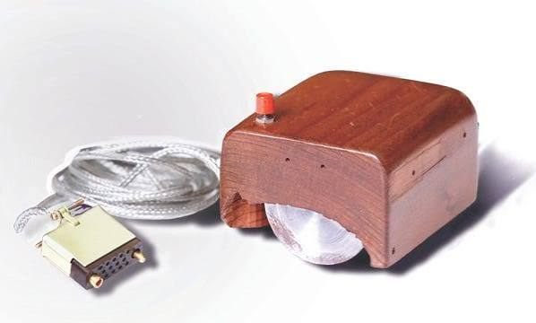

Technology has become an important part of our everyday
lives, but there are many interesting things about it
that most people don't know. From the hidden history of
familiar devices to the unusual ideas behind modern
innovations, technology has more secrets than we might
imagine. I created this blog to explore lesser-known
technology facts and share discoveries that can make
readers curious about the digital world. My goal is to
show that even the simplest technologies have
fascinating stories worth discovering.
5 Interesting Technology Facts You Probably Didn't Know
1. QR Codes Were Originally Created for the Automotive Industry
Most people recognize QR codes as something used
for digital payments, restaurant menus, and website
links. However, QR codes were originally developed
in Japan in 1994 by a company called DENSO WAVE.
They were designed to help automotive factories
track parts and manage product information more
efficiently. Traditional barcodes could not store
enough information for the growing needs of
manufacturing, so engineers developed a code that
could hold more data and be scanned quickly.
QR codes were originally developed for automotive manufacturing.
Why is this interesting?
Something we commonly use to pay for food or access
websites actually started as a solution to a problem
in car manufacturing. It is a good example of how
an invention can become useful in ways its creators
might not have originally expected.
Bluetooth is a familiar technology that allows
smartphones, computers, speakers, and headphones
to connect wirelessly. But its name actually comes
from a historical figure: King Harald Bluetooth
Gormsson, a king associated with uniting Denmark
and Norway. In the 1990s, technology companies were
working together to develop a wireless communication
standard. The name Bluetooth was suggested as a
temporary code name because the technology was
intended to unite different devices and industries.
Surprisingly, the temporary name became permanent.
The Bluetooth name is connected to an ancient king.
Why is this interesting?
Many people think Bluetooth is an abbreviation
or a technical term, but it is actually connected
to history. Even its logo has a historical
connection, combining two ancient symbols
representing the king's initials.
Today, computer mice are available in different
shapes, sizes, and designs. Some are wireless,
while others are designed for gaming and
professional work. However, the first computer
mouse looked very different from the devices
we use today. It was developed by Douglas
Engelbart and his team at the Stanford Research
Institute. The early prototype, built in 1964,
had a wooden case, one button, and wheels
underneath to track movement. It was designed
to make interacting with computers easier.

The first computer mouse had a wooden case and one button.
Why is this interesting?
It is surprising to think that a device used by
millions of people today started as a simple
wooden invention. This shows how technology can
improve over time, transforming basic ideas
into tools that become part of everyday life.
4. Computers Understand Information Through Only Two Digits
Computers can display colorful pictures, play music,
run games, and process complicated information.
However, deep inside their electronic systems,
they use a number system called binary. Binary
consists of only two digits: 0 and 1. These digits
correspond to two states in digital electronic
circuits, commonly represented as off and on.
By combining different patterns of these digits,
computers can represent text, numbers, pictures,
videos, and other forms of information.
Computers use combinations of zeros and ones to represent information.
Why is this interesting?
It is amazing that something as powerful as a
modern computer relies on only two basic digits.
Every time we watch a video, open an application,
or write a document, computers process information
represented through combinations of zeros and ones.
5. GPS Can Determine Your Location Without Mobile Internet
Many people assume that GPS requires an internet
connection to determine their location. However,
GPS works differently. GPS receivers obtain
signals from satellites orbiting Earth and use
those signals to calculate their position. This
means the basic positioning function does not
require mobile data or Wi-Fi. What often requires
an internet connection is downloading map
information, checking traffic conditions, or
searching for places.
GPS satellites help devices determine their location.
Why is this interesting?
This explains why some navigation devices can
still determine their location even without
an internet connection. It also shows that GPS
and online map services are not exactly the
same thing, even though they are commonly
used together.
Technology is full of interesting discoveries that
are often overlooked because we use these inventions
every day without thinking about their origins or
how they work. From QR codes that began in automotive
factories to computers that process information using
only two digits, these facts show that even familiar
technologies have fascinating stories behind them.
Learning about these discoveries helps us appreciate
the creativity, research, and innovation involved
in developing modern technology. Sometimes, the most
interesting things about technology are the ones
we never thought to question.